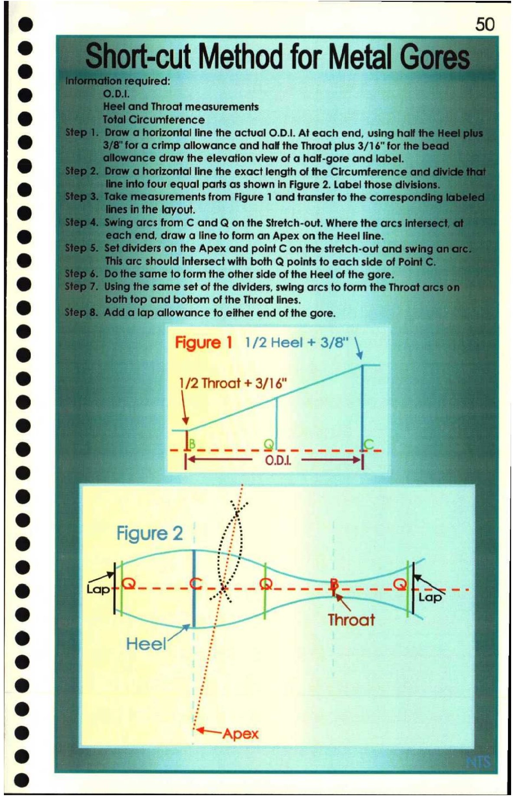

50. Short-cut Method for Metal Gores

& 50
. yt-cut Method for Metal G
e nd Throat measurements 2
@ Circumference a
3 horizontal line the actual O.D.I. At each end, using half
td 4a crimp allowance and half the Throat plus 3/16" for the!
ance draw the elevation view of a half-gore and label.
@ qd horizontal line the exact length of the Circumference an
@ lo four equal parts as shown in Figure 2. Label those divisio!
measurements from Figure 1 and transfer to the correspon
@ in the layout. g
‘Orcs from C and Q on the Stretch-out. Where the arcs inte
o vend, draw a line to form an Apex on the Heel line. on
yiders on the Apex and point C on the stretch-out and swir
[ ] arc should intersect with both Q points to each side of Poir
ié same to form the other side of the Heel of the gore.
© j the same set of the dividers, swing arcs to form the Throat
h top and bottom of the Throat lines. af
@ /a lap allowance to either end of the gore. ee
e me «Figure 1 1/2 Heel + 3/8" \ a
® 4 1/2 Throat + 3/16" _ | E.
a — a
a i ic
Se = - ae = = Sl. oS a
e Figure 2 fii
Ste fp Pah
® Ts a Z Throat
@ Heel i